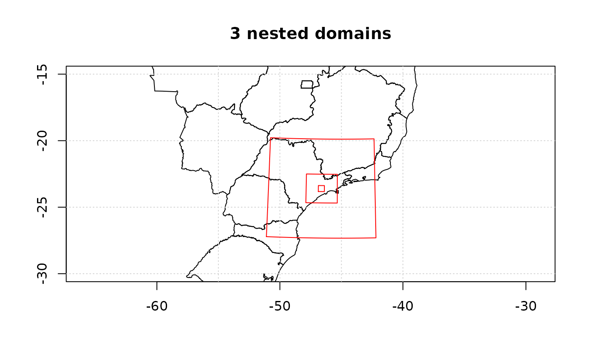

Return a list containing information of a regular grid / domain
Usage
gridInfo(
file = file.choose(),
z = FALSE,
missing_time = "1984-03-10",
verbose = TRUE
)Examples
grid_d1 <- gridInfo(paste(system.file("extdata", package = "EmissV"),
"/wrfinput_d01",sep=""))
#> Grid information from: /home/runner/work/_temp/Library/EmissV/extdata/wrfinput_d01
grid_d2 <- gridInfo(paste(system.file("extdata", package = "EmissV"),
"/wrfinput_d02",sep=""))
#> Grid information from: /home/runner/work/_temp/Library/EmissV/extdata/wrfinput_d02
grid_d3 <- gridInfo(paste(system.file("extdata", package = "EmissV"),
"/wrfinput_d03",sep=""))
#> Grid information from: /home/runner/work/_temp/Library/EmissV/extdata/wrfinput_d03
names(grid_d1)
#> [1] "File" "Times" "Lat" "Lon" "z"
#> [6] "Horizontal" "DX" "xlim" "ylim" "Box"
#> [11] "boundary" "polygon" "map_proj" "coords" "geogrd.proj"
#> [16] "r" "grid"
# for plot the shapes
shape <- raster::shapefile(paste0(system.file("extdata", package = "EmissV"),
"/BR.shp"))
raster::plot(shape,xlim = c(-55,-40),ylim = c(-30,-15), main="3 nested domains")
axis(1); axis(2); box(); grid()
lines(grid_d1$boundary, col = "red")
text(grid_d1$xlim[2],grid_d1$Ylim[1],"d1",pos=4, offset = 0.5)
lines(grid_d2$boundary, col = "red")
text(grid_d2$xlim[2],grid_d2$Ylim[1],"d2",pos=4, offset = 0.5)
lines(grid_d3$boundary, col = "red")
text(grid_d3$xlim[1],grid_d3$Ylim[2],"d3",pos=2, offset = 0.0)
